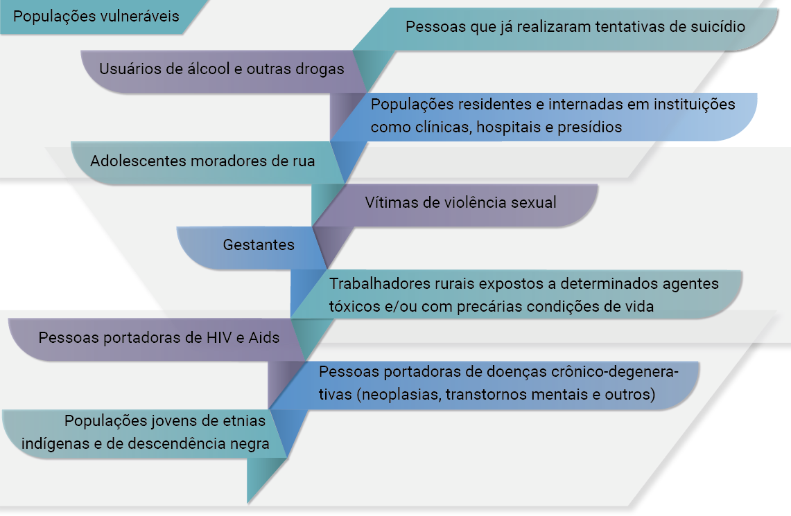
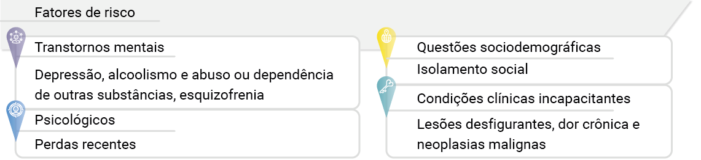

Sumário
Suicídio como problema de saúde pública
Nesta unidade você compreenderá a relevância e a importância de trabalhar o comportamento suicida (comportamento suicida engloba: a ideação, os planos e o ato propriamente) como questão de saúde pública, e como você pode atuar na prevenção dos agravos à saúde por meio de um cuidado singular e longitudinal às pessoas que vivenciam esta situação.
Suicídio como problema de saúde pública
Inicialmente, é necessário definirmos três conceitos importantes para compreensão deste curso. Primeiramente, o suicídio não é diagnóstico nem transtorno mental; é um comportamento. Tal comportamento é caracterizado pela ideação e o ato deliberado de autoaniquilação, ou seja, matar-se.
Outra situação evidenciada é a do comportamento de autoagressão, que envolve vários aspectos emocionais e que se manifesta com diferentes atos deliberados pelo indivíduo contra si mesmo.
Nesta situação o indivíduo utiliza diferentes recursos, como, por exemplo, envenenamentos e lesões autoinfligidas entre outros. Tal ato pode ou não ter a intenção ou um desfecho fatal.
Por fim, as ideações suicidas caracterizam-se por pensamentos de morte e podem ser acompanhadas de planos estruturados ou não, imediatos ou não, sendo uma situação que requer intervenção de saúde imediata.
Os fatores que estão por trás do ato suicida são múltiplos e multifacetados, e envolvem uma interação única de fatores biológicos, psicossociais e culturais para cada pessoa. O suicídio não é um evento que ocorre num vácuo, é a consequência final de todo um processo.
Sendo o suicídio o foco deste curso, é extremamente importante um resgate histórico sobre este ato. Estudos demonstram que o suicídio era visto na Grécia antiga como uma ofensa ao estado, e o indivíduo com tal comportamento era rejeitado e consequentemente era enterrado em sítios comunitários (MINOIS, 2001).
Na Idade Média o suicídio era considerado um ato criminoso e até mesmo egoísta. Para aqueles que o cometiam, o direito de ser enterrado no cemitério era recusado. Outra característica da época era que os bens do suicida eram confiscados e divididos entre os nobres e a coroa (MACDONALD; MURPHY, 1991).
Nos séculos XVII e XVIII os filósofos em sua maioria condenavam o suicídio, e alguns reconheciam uma importante conexão entre o suicídio e a melancolia ou outro distúrbio mental (MINOIS, 2001). Outro olhar histórico importante sobre o suicídio é a compreensão da maioria das religiões que consideram o suicídio como um pecado contra Deus.
Em 1995, o papa João Paulo II trouxe a oposição da igreja em relação ao suicídio e também a outras situações, como a eutanásia e o aborto, vistos como crimes contra a vida, assim como o homicídio e o genocídio (TONDO; BALDESSARINI, 2001). Para Carvalho et al. (2017), as pessoas na sociedade atual vivem com um sentimento de fracasso por não obter a tão almejada sensação de felicidade. Vivem com a impressão de que alguma coisa está errada na sociedade. O mal-estar social resulta de alguma experiência instalada na consciência humana, como uma angústia, que faz viver como um andante sem rumo histórico.
Dentre as opções de soluções para esse mal-estar social encontram-se entre outras, o uso excessivo de medicamento, recurso às drogas e o suicídio, com a necessidade de libertar-se do sofrimento a todo custo.
A seguir, estes temas serão abordados a fim de instrumentalizar você para atuar na identificação de fatores de risco, de proteção e no cuidado às pessoas que estão vivenciando esta situação.
Epidemiologia
Estima-se que 97 mil pessoas na região das Américas morreram por suicídio no ano de 2019, sendo a maior proporção entre homens (77,6%) e entre adultos de meia idade (de 40-69 anos) seguidos por idosos com mais de 70 anos. Em 2017, os métodos mais frequentemente utilizados foram enforcamento, afogamento, uso de armas de fogo e envenenamento.
Segundo dados da Organização Mundial de Saúde, estima-se que cerca de 703.000 pessoas cometem suicídio por ano ao redor do mundo. A taxa é maior entre os homens, chegando a 12.6 a cada 100.000 pessoas e 5,4 a cada 100.000 entre mulheres (WHO, 2021). No Brasil, entre 2010 a 2019, ocorreram cerca de 112.230 mortes por suicídio, com um aumento de 43% no número anual de mortes, de 9.454 em 2010, para 13.523 em 2019.
Com relação às diferenças entre sexos, a taxa de mortalidade por suicídio em 2019 foi de 10,7 por 100 mil homens, enquanto entre mulheres esse valor foi de 2,9, verificando-se um aumento de 26% entre homens e 29% entre mulheres.
Destaca-se também um aumento significativo nas taxas de mortalidade de adolescentes, que cresceram 81% no período, passando de 606 óbitos e de uma taxa de 3,5 mortes por 100 mil hab. para 1.022 óbitos e uma taxa de 6,4 suicídios para cada 100 mil adolescentes.
Cabe destacar que, apesar de menos expressivas em comparação aos demais grupos etários, entre 2010 e 2013 os menores de 14 anos aumentaram suas taxas de mortalidade em 113%, passando de 104 óbitos e uma taxa de 0,3 por 100 mil, para 191 óbitos, e uma taxa de 0,7 por 100 mil habitantes.
Com relação às diferenças entre as populações, uma análise em nível nacional demonstrou uma taxa média de suicídio entre indígenas, no período de 2015 a 2018, de 17,5 por 100 mil indígenas, sendo 2,9 vezes superior à taxa entre brancos, e 3,1 vezes superior à taxa entre negros, e com maior risco de morte na faixa de 15 a 19 anos de idade (BRASIL, 2020).
Ainda descrevendo as especificidades das taxas em relação à população, observa-se que também são elevadas em grupos mais vulneráveis que sofrem discriminação, como refugiados e migrantes, população LGBTQIA+ e pessoas privadas de liberdade. No entanto, o fator de risco mais relevante é o histórico de a tentativa pregressa.
No que se refere às notificações das lesões autoprovocadas, classificadas como comportamento suicida ou autoagressão independentemente do grau de intenção letal, em 2019 foi registrado um total de 124.709 casos. Esse número representa um aumento de 39,8% em relação a 2018; a maioria foi de pessoas brancas (47,3%), do sexo feminino (71,3%), com baixo grau de instrução e com idade entre 15 e 29 anos, sendo a residência o principal local de ocorrência (82%), e o envenenamento o meio mais empregado para a tentativa de suicídio (60%). A Agenda de Ações Estratégicas para Vigilância e Prevenção do Suicídio e Promoção da Saúde no Brasil foi uma ação que teve como meta diminuir a incidência do suicídio até 2020, destacando populações vulneráveis que merecem atenção, conforme descrição do esquemático a seguir.
Estima-se que as tentativas superem o número de suicídios consumados em pelo menos 10 vezes e, nesse sentido, as tentativas de suicídio devem ser encaradas com seriedade, como sinal de alerta, revelando a influência de fenômenos psicossociais complexos (SILVA et al., 2017). A relação entre o comportamento suicida e transtornos mentais, em particular a depressão e o uso prejudicial de álcool, é fato. No entanto, suicídios também ocorrem em momentos de crise, como um colapso na capacidade de lidar com os estresses da vida, tais como problemas financeiros, términos de relacionamento ou dores crônicas e doenças. Além disso, o enfrentamento de conflitos, desastres, violência, abusos ou perdas e um senso de isolamento estão fortemente associados com o comportamento suicida. Conheça os principais fatores de risco para o suicídio no infográfico a seguir (BRASIL, 2017).
Situações de desemprego, a perda recente do emprego e falências podem ser fatores de agravamento das condições sociais e da situação de saúde da população, principalmente durante momentos de crises econômicas podendo ser fonte de intenso sofrimento. Um estudo que teve por objetivo avaliar o efeito de eventos financeiros sobre a mortalidade, considerou indicadores de emprego e mortalidade de 26 países europeus, chegando à conclusão de que 1% de aumento no desemprego provoca o aumento de 0,79% nos casos de suicídio de menores de 65 anos (STUCKLER et al, 2009; IPEA, 2016).
Alguns ambientes e processos de trabalho também podem ser fator de grande sofrimento e adoecimento psíquico. Dessa forma as questões de saúde mental e suicídio relacionados ao trabalho devem ser considerados e abordados.
O Ministério da Saúde estabeleceu uma Agenda de Ações Estratégicas para a Vigilância e Prevenção do Suicídio e Promoção da Saúde no Brasil para atingir a meta da Organização Mundial da Saúde (OMS) de redução de 10% dos óbitos por suicídio até 2020.
Entre as ações, destacaram-se a capacitação e sensibilização de profissionais, orientação para a população e jornalistas, a expansão da rede de assistência à saúde mental nas áreas de maior risco e o monitoramento anual dos casos no país. A análise das taxas de incidência e das características psicossociais dos envolvidos no ato, bem como a identificação dos fatores de risco, permitiu que essas estratégias estivessem alinhadas às reais necessidades da comunidade, e que fosse realizado acompanhamento por meio de programas de prevenção e tratamento adequados (RIBEIRO, 2018).
Em 2019, foi sancionada a lei nº 13.819 que institui a Política Nacional de Prevenção da Automutilação e do Suicídio. Dentre os objetivos dessa politica, destaca-se a prevenção da violência autoprovocada, promoção de educação permanente de gestores e de profissionais de saúde em todos os níveis de atenção quanto ao sofrimento psíquico e às lesões autoprovocadas, informar e sensibilização da sociedade sobre a importância e a relevância das lesões autoprovocadas como problemas de saúde pública passíveis de prevenção (BRASIL 2019).
Potencial da Atenção primária à saúde na prevenção do suicídio
O suicídio passa a ser cada vez mais um marcador de qualidade de vida, como um indicador de mortes evitáveis. O reconhecimento da necessidade de atuar na prevenção, melhorando a saúde mental, está contemplado nos Objetivos de Desenvolvimento Sustentável, especificamente na meta 3.4: “até 2030, reduzir em um terço a mortalidade prematura por doenças crônicas não transmissíveis via prevenção e tratamento, e promover a saúde mental e o bem-estar” (ONU, 2015).
Uma das formas de prevenir o suicídio é a identificação precoce e o tratamento efetivo de transtornos mentais por provedores de cuidados de saúde. Busca-se ampliar, ou propriamente aumentar a disponibilidade de cuidados de saúde mental, o que pode influenciar de forma significativa na diminuição das taxas de suicídio (KUTCHER; CHEHIL, 2007).
Nesse sentido, as equipes da Atenção Primária à Saúde (APS) são de grande importância na prevenção do suicídio, na medida em que estabelecem contato próximo com a comunidade, o que facilita o vínculo entre população e sistema de saúde e possibilita acionar o apoio de familiares, amigos e organizações. Estes profissionais podem ser os primeiros a perceber os sinais de que uma pessoa está pensando em suicídio, e podem atuar conjuntamente com os psicólogos e psiquiatras das equipes de saúde mental nessa identificação, na atenção e nas ações de prevenção e posvenção (OMS, 2000).
As Unidades Básicas de Saúde são porta de entrada preferencial da rede de atenção à saúde e os profissionais que nelas atuam podem ser dispositivos-chave na busca e sensibilização de fontes de apoio na rede de saúde, e que também extrapolam este âmbito. É necessário que exista uma articulação entre os pontos de atenção da Rede de Atenção Psicossocial (RAPS) e a equipe de APS para o fortalecimento da prevenção do suicídio. Compreendendo que a pessoa com comportamento suicida deve ser atendida nos diferentes dispositivos da rede de atenção psicossocial, busca-se por meio desta avaliação identificar as pessoas sob o risco de suicídio, proporcionando um manejo apropriado de segurança e a implementação de intervenções voltadas aos riscos que podem ser modificados.
Sabe-se que as equipes dos Centros de Atenção Psicossocial (CAPS) são responsáveis pelo acompanhamento mais intensivo dessas pessoas, pois lidam diariamente com pacientes em situação de crise e têm contato mais próximo com elas, o que de alguma forma facilita as intervenções. Entretanto, como o suicídio é uma questão complexa e multifatorial, necessita de atenção prolongada em vários pontos da rede. Por isso, é tão importante aprimorar ações de saúde mental, articulando APS e serviços especializados em saúde mental, como, por exemplo, CAPS (RIBEIRO, 2018).
A articulação da APS com os serviços de Atenção Psicossocial também tem papel fundamental na prevenção do suicídio. Estudos do Ministério da Saúde apontam que nos locais onde existem CAPS o risco de suicídio reduz em até 14%. No entanto, a APS é um local estratégico de cuidado em saúde mental, na medida em que facilita o acesso das equipes aos usuários e vice e versa, possibilitando a construção do vínculo e da longitudinalidade da atenção (BRASIL, 2013).
Dessa forma, tanto o trabalho dos profissionais da APS quanto da atenção especializada em saúde mental são de extrema importância para identificação e acolhimento da pessoa em risco de suicídio, visto que podem realizar escuta e avaliar as angústias e necessidades destes. Posteriormente, as equipes de APS podem dar os encaminhamentos que forem necessários e solicitar acompanhamento domiciliar com suporte dos Agentes Comunitários de Saúde, quando necessário (RIBEIRO, 2018).
É importante também que as equipes de APS atuem para fortalecer políticas de redução do uso prejudicial de álcool e outras drogas, ações que são relevantes para a prevenção do suicídio, bem como para orientar a qualidade das informações da mídia sobre o tema. Listamos, no quadro ao lado algumas considerações importantes.
Nas práticas de saúde é relevante analisar os dados sobre suicídio e tentativas de suicídio. Isso significa avaliar a qualidade dos sistemas de vigilância existentes e identificar lacunas que existam na coleta de dados. A análise de barreiras à implementação da prevenção do suicídio e da consolidação de políticas é uma parte essencial, pois sem a identificação dos empecilhos, as estratégias podem não passar do papel para ação (OMS, 2012).